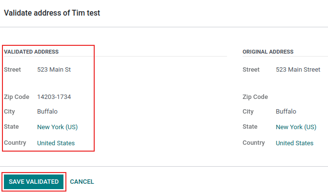

AvaTax integration¶
Avalara’s AvaTax is a cloud-based tax software. Integrating AvaTax with Odoo provides real-time and region-specific tax calculations when users sell, purchase, and invoice items in Odoo. AvaTax tax calculation is supported with every United Nations charted country, including inter-border transactions.
Important
AvaTax is only available for integration with databases/companies that have locations in the United States and Canada. This means the fiscal position/country of a database can only be set to the United States or Canada. For more information, reference this documentation: Fiscal country.
AvaTax accounts for location-based tax rates for each state, county, and city. It improves remittance accuracy by paying close attention to laws, rules, jurisdiction boundaries, and special circumstances (like, tax holidays, and product exemptions). Companies who integrate with AvaTax can maintain control of tax-calculations in-house with this simple API integration.
Important
Some limitations exist in Odoo while using AvaTax for tax calculation:
AvaTax is not supported in Odoo’s Point of Sale app, because a dynamic tax calculation model is excessive for transactions within a single delivery address, such as stores or restaurants.
AvaTax and Odoo use the company address and not the warehouse address.
Exercise tax is not supported. This includes tobacco/vape taxes, fuel taxes, and other specific industries.
See also
Avalara’s support documents: About AvaTax
Set up on AvaTax¶
To use AvaTax, an account with Avalara is required for the setup. If one has not been set up yet, connect with Avalara to purchase a license: Avalara: Let’s Talk.
Tip
Upon account setup, take note of the AvaTax Account ID. This will be needed in the Odoo setup. In Odoo, this number is the API ID.
Create basic company profile¶
Collect essential business details for the next step: locations where tax is collected, products/services sold (and their sales locations), and customer tax exemptions, if applicable. Follow the Avalara documentation for creating a basic company profile:
Connect to AvaTax¶
After creating the basic company profile in Avalara, connect to AvaTax. This step links Odoo and AvaTax bidirectionally.
Navigate to either Avalara’s sandbox or production environment. This will depend on which type of Avalara account the company would like to integrate.
Log in to create the License Key. Go to . Click Generate License Key.
Note
A warning appears stating: If your business app is connected to Avalara solutions, the
connection will be broken until you update the app with the new license key. This action cannot
be undone.
Generating a new license key breaks the connection with existing business apps using the AvaTax integration. Make sure to update these apps with the new license key.
If this will be the first API integration being made with AvaTax and Odoo, then click Generate license key.
If this is an additional license key, ensure the previous connection can be broken. There is only one license key associated with each of the Avalara sandbox and production accounts.
Important
Copy this key to a safe place. It is strongly encouraged to backup the license key for future reference. This key cannot be retrieved after leaving this screen.
Odoo configuration¶
Before using AvaTax, there are some additional configurations in Odoo to ensure tax calculations are made accurately.
Verify that the Odoo database contains necessary data. The country initially set up in the database determines the fiscal position, and aids AvaTax in calculating accurate tax rates.
Fiscal country¶
To set the Fiscal Country, navigate to .
See also
Under the Taxes section, set the Fiscal Country feature to United States or Canada. Then, click Save.
Company settings¶
All companies operating under the Odoo database should have a full and complete address listed in the settings. Navigate to the , and under the Companies section, ensure there is only one company operating the Odoo database. Click Update Info to open a separate page to update company details.
If there are multiple companies operating in the database, click Manage Companies to load a list of companies to select from. Update company information by clicking into the specific company.
Database administrators should ensure that the Street…, Street2…, City, State, ZIP, and Country are all updated for the companies.
This ensures accurate tax calculations and smooth end-of-year accounting operations.
See also
Module installation¶
Next, ensure that the Odoo AvaTax module is installed. To do so, navigate to the
. In the Search… bar, type in avatax, and press
Enter. The following results populate:
Name |
Technical name |
Description |
|---|---|---|
Avatax |
|
Default AvaTax module. This module adds the base AvaTax features for tax calculation. |
Avatax for SO |
|
Includes the information needed for tax calculation on sales orders in Odoo. |
Avatax for Subscriptions |
|
This module includes the features required for tax calculation on subscriptions in Odoo. |
Account Avatax - Ecommerce |
|
Includes tax calculation features for the checkout process on Odoo eCommerce. |
Account AvaTax - Ecommerce - Delivery |
|
Includes tax calculation features for the delivery process on Odoo eCommerce. |
Click the Install button on the module labeled Avatax: account_avatax.
Doing so installs the following modules:
Avatax:
account_avataxAvatax for SO:
account_avatax_saleAccount Avatax - Ecommerce:
website_sale_account_avatax
Should AvaTax be needed for Odoo Subscriptions, or for delivery tax in Odoo eCommerce, then install those modules individually by clicking on Install.
Odoo AvaTax settings¶
To integrate the AvaTax API with Odoo, go to section. The AvaTax fields in the Taxes section is where the AvaTax configurations are made and the credentials are entered in.

Prerequisites¶
First, select the Environment in which the company wishes to use AvaTax in. It can either be Sandbox or Production.
See also
For help determining which AvaTax environment to use (either Production or Sandbox), visit: Sandbox vs Production environments.
Credentials¶
Now, the credentials can be entered in. The AvaTax Account ID should be entered in the API ID field, and the License Key should be entered in the API Key field.
Important
The Account ID can be found by logging into the AvaTax portal (sandbox or production). In the upper-right corner, click on the initials of the user and Account. The Account ID is listed first.
To access the License Key see this documentation: Connect to AvaTax.
For the Company Code field, enter the Avalara company code for the company being
configured. Avalara interprets this as DEFAULT, if it is not set. The Company Code can
be accessed in the Avalara management portal.
First, log into the AvaTax portal (sandbox or production). Then, navigate to . The Company Code value is located in the row of the Company in the Company Code column.

Transaction options¶
There are two transactional settings in the Odoo AvaTax settings that can be configured: Use UPC and Commit Transactions.
If the checkbox next to Use UPC is ticked, the transactions will use Universal Product Codes (UPC), instead of custom defined codes in Avalara. Consult a certified public accountant (CPA) for specific guidance.
Should the Commit Transactions checkbox be ticked, then, the transactions in the Odoo database will be committed for reporting in AvaTax.
Address validation¶
The Address Validation feature ensures that the most up-to-date address by postal standards is set on a contact in Odoo. This is important to provide accurate tax calculations for customers.
Important
The Address Validation feature only works with partners/customers in North America.
Additionally, tick the checkbox next to the Address validation field.
Important
For accurate tax calculations, it is best practice to enter a complete address for the contacts saved in the database. However, AvaTax can still function by implementing a best effort attempt using only the Country, State, and Zip code. These are the three minimum required fields.
Save the settings to implement the configuration.
Tip
Manually Validate the address by navigating to the , and selecting a contact. Now that the AvaTax module has been configured on the database, a Validate button appears directly below the Address.
Click Validate, and a pop-up window appears with a Validated Address and Original Address listed. If the Validated Address is the correct mailing address for tax purposes, click Save Validated.
Warning
All previously-entered addresses for contacts in the Odoo database will need to be validated using the manually validate process outlined above. Addresses are not automatically validated if they were entered previously. This only occurs upon tax calculation.
Test connection¶
After entering all the above information into the AvaTax setup on Odoo, click Test connection. This ensures the API ID and API KEY are correct, and a connection is made between Odoo and the AvaTax application programming interface (API).
Sync parameters¶
Upon finishing the configuration and settings of the AvaTax section, click the Sync Parameters button. This action synchronizes the exemption codes from AvaTax.
Fiscal position¶
Next, navigate to . A Fiscal Position is listed named, Automatic Tax Mapping (AvaTax). Click it to open AvaTax’s fiscal position configuration page.
Here, ensure that the Use AvaTax API checkbox is ticked.
Optionally, tick the checkbox next to the field labeled: Detect Automatically. Should this option be ticked, then, Odoo will automatically apply this Fiscal Position for transactions in Odoo.
Enabling Detect Automatically also makes specific parameters, such as VAT required, Foreign Tax ID, Country Group, Country, Federal States, or Zip Range appear. Filling these parameters filters the Fiscal Position usage. Leaving them blank ensures all calculations are made using this Fiscal Position.
Warning
Should the Detect Automatically checkbox not be ticked, each customer will need to have the Fiscal Position set on their Sales and Purchase tab of the contact record. To do so, navigate to , or . Then, select a customer or contact to set the fiscal position on.
Navigate to the Sales and Purchase tab, and down to the section labeled, Fiscal Position. Set the Fiscal Position field to the fiscal position for the customer.
AvaTax accounts¶
Upon selecting the checkbox option for Use AvaTax API a new AvaTax tab appears. Click into this tab to reveal two different settings.
The first setting is the AvaTax Invoice Account, while the second is, AvaTax Refund Account. Ensure both accounts are set for smooth end-of-year record keeping. Consult a certified public accountant (CPA) for specific guidance on setting both accounts.
Click Save to implement the changes.
Tax mapping¶
The AvaTax integration is available on sale orders and invoices with the included AvaTax fiscal position.
Product category mapping¶
Before using the integration, specify an Avatax Category on the product categories. Navigate to . Select the product category to add the AvaTax Category to. In the AvaTax Category field, select a category from the drop-down menu, or Search More… to open the complete list of options.

Product mapping¶
AvaTax Categories may be set on individual products, as well. To set the Avatax Category navigate to . Select the product to add the Avatax Category to. Under the General Information tab, on the far-right, is a selector field labeled: Avatax Category. Finally, click the drop-down menu, and select a category, or Search More… to find one that is not listed.
Note
If both the product, and its category, have an AvaTax Category set, the product’s AvaTax Category takes precedence.

Important
Mapping an AvaTax Category on either the Product or Product Category should be completed for every Product or Product Category, depending the route that is chosen.
See also